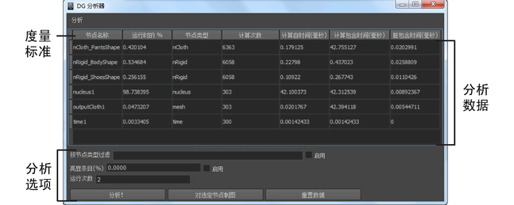

分析是计算用于完成某些进程的时间和资源的过程。它对于查找降低工作效率的低效代码非常有用。“DG 分析器”(DG Profiler)可通过 API 访问，它使用 MFnDependency 节点类。通过它可以识别哪些节点占用过多处理时间，然后减少不必要的调用，或通过其他方式提高进程效率。通过分析还可以在您于场景中工作时按特定指标过滤每个节点。“DG 分析器”(DG Profiler)不会测量所复制的数据使用的内存或依存关系图 (DG) 计算的内存。
“DG 分析器”(DG Profiler)可生成 DG 中包括的所有节点的分析数据。该工具基于指定的迭代次数收集每个节点的各种时间度量标准。分析完成后，可将生成的数据导出到电子表格中，以便进行进一步分析。

若要打开 DG 分析器，请执行以下操作：
- 在“窗口 > 设置/首选项 > 插件管理器”(Windows > Settings/Preferences > Plug-in Manager)中启用 dgProfiler.mll 插件。滚动到 dgProfiler.mll，并确保其已加载。
- 选择“窗口 > 常规编辑器 > DG 分析器”(Windows > General Editors > DG Profiler)。
度量标准
-
节点名称(Node Name)
- 节点的名称。
-
运行时的百分比(% of Runtime)
- 以总时间的百分比表示节点的计算自时间的值。
-
节点类型(Node Type)
- 节点的类型。请参见节点类型。
-
计算次数(Number of Computes)
- 执行节点计算的次数。
-
计算自身(秒)(Compute Self (sec))
- 计算节点自身所需的时间。
-
计算包含(秒)(Compute Inclusive (sec))
- 计算节点以及所有依存关系所需的时间。
-
脏包含(秒)(Dirty Inclusive (sec))
- 弄脏此节点的属性及其依存关系所需的时间。
分析选项
-
分析！(Profile!)
- 启动分析过程。
-
过滤器节点(Filter Nodes)
- 按节点类型过滤分析数据。在“按节点类型过滤”(Filter by Node Type)字段中输入节点类型后，选择“启用”(Enable)可过滤数据。取消选择“启用”(Enable)可关闭节点类型过滤。
-
对选定节点制图(Graph Selected Node)
- 在“Hypergraph”中显示选定节点的输入和输出连接。
-
保存分析数据(Save Profile Data)
- 可用于保存分析过程中的数据。数据将保存为逗号分隔值 (.csv) 文件类型。
-
重置数据(Reset Data)
- 从“DG 分析器”(DG Profiler)中清除分析数据。